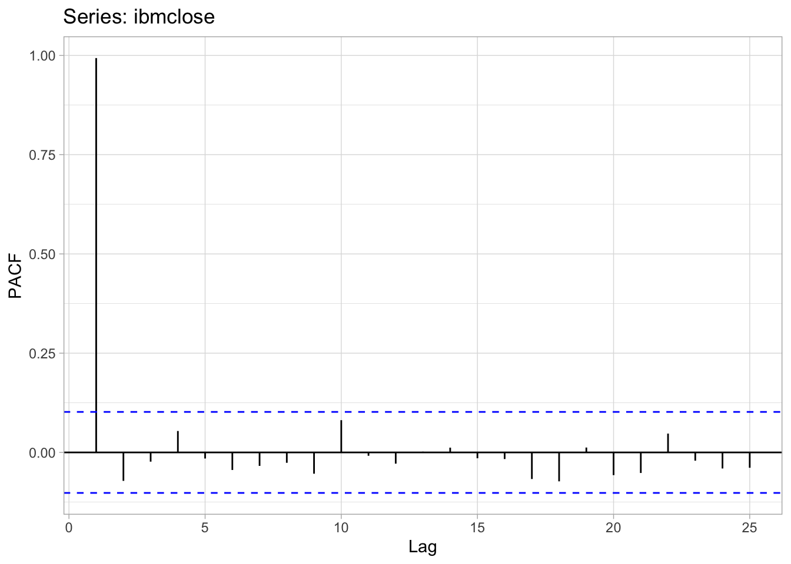
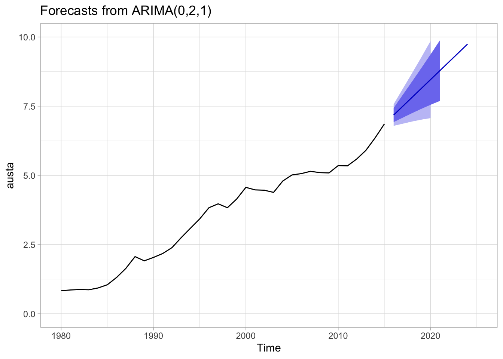

autoplot(plastics) +
ggtitle('Monthly Plastics Sales') +
ylab('Units Sold') +
xlab('Year')Homework 1
CUNY DATA 624 - 2023 Summer I
Exercise Key
- KJ - Applied Predictive Modeling (Kuhn, Johnson)
- HA - Forecasting: Principles and Practice, 2nd Ed. (Hyndman, Athanasopoulos)
HA Exercise 2.1
Use the help function to explore what the series gold, woolyrnq and gas represent.
- The series
goldis a time-series dataset of daily morning gold prices in US dollars, from Jan 1, 1985 through Mar 31, 1989. - The series
woolyrngis a time-series dataset of quarterly production of woolen yarn in Australia, in metric tons (tonnes), from Mar 1965 through Sep 1994. - The series
gasis a time-series dataset of monthly gas production in Australia, units unknown, from 1956 through 1995.
- Use
autoplot()to plot each of these in separate plots.
autoplot(gold) +
ggtitle("Daily Morning Gold Prices") +
xlab("Days") +
ylab("US Dollars")
autoplot(woolyrnq) +
ggtitle("Quarterly Woollen Yarn Production: Australia") +
xlab("Year") +
ylab("Metric Tons")
autoplot(gas) +
ggtitle("Monthly Gas Production: Australia") +
xlab("Years") +
ylab("Units")- What is the frequency of each series? Hint: apply the
frequency()function.
- The frequency of
goldis 1 (daily) - The frequency of
woolyrnqis 4 (quarterly) - The frequency of
gasis 12 (yearly)
- Use
which.max()to spot the outlier in thegoldseries. Which observation was it?
- The maximum value in the
goldseries is observation 770 with a value of 593.7.
HA Exercise 2.3
Download some monthly Australian retail data from the book website. These represent retail sales in various categories for different Australian states, and are stored in a MS-Excel file.
Select one of the time series … explore your chosen retail time series using the following functions:
autoplot(),ggseasonplot(),ggsubseriesplot(),gglagplot(),ggAcf()Can you spot any seasonality, cyclicity and trend? What do you learn about the series?
We’ve selected product A3349790V, which appears to display a gradually increasing trend over the 30 years with strong annual seasonality in the month of December, when sales spike dramatically and then quickly drop. There may also be a cyclic pattern present (though very slight) as the overall trend seems to increase and level off again every 10 years.
This simple time-series plot suggests the product in question might be a long-lived, high-selling item during the traditional holiday season, and that it may in fact be somewhat demand-inelastic during times of economic recession.
retaildata <- readxl::read_excel('data/retail.xlsx', skip=1)
myts <- ts(retaildata[,'A3349790V'], frequency=12, start=c(1982,4))
autoplot(myts) +
ggtitle('Monthly Product Sales: A3349790V') +
xlab('Year') + ylab('Sales')The seasonal time-series ggseasonplot supports this hypothesis, demonstrating a consistent seasonal trend with sales spiking every December.
Another view of this seasonality is provided by ggsubseriesplot, demonstrating that average product sales seem to double during the month of December, versus their normal monthly sales levels.
However we also note that overall sales in all months seem to have leveled off in recent years, illustrated by the flattening curves towards the right of each monthly subseries.
ggseasonplot(myts) +
ggtitle('Seasonal Plot: A3349790V') +
xlab('Month') + ylab('Sales')
ggsubseriesplot(myts) +
ggtitle('Subseries Plot: A3349790V') +
xlab('Month') + ylab('Sales')
The observation that a strong, 12-month seasonal cycle is present in these sales data is backed up by the gglagplot, which shows almost-perfect alignment at “lag 12”.
The Autocorrelation Function (ACF) also supports this observation, with strong autocorrelations at multiples of the 12-month seasonal frequency.
gglagplot(myts) +
ggtitle('Lag Plot: A3349790V')
ggAcf(myts) +
ggtitle('ACF Plot: A3349790V') HA Exercise 6.2
The plastics data set consists of the monthly sales (in thousands) of product A for a plastics manufacturer for five years.
- Plot the time series of sales of product A. Can you identify seasonal fluctuations and/or a trend-cycle?
Before applying any calculations, we can observe a rising trend-cycle over the five years, with an annual seasonality where sales peak towards mid-year and then drop off rapidly.
- Use a classical multiplicative decomposition to calculate the trend-cycle and seasonal indices.
plastics %>% decompose(type='multiplicative') %>%
autoplot() +
xlab('Year') +
ggtitle("Monthly Plastics Sales: Classical Mult Decomp")- Do the results support the graphical interpretation from part a?
The results of the Classical Decomposition do seem to support the graphical interpretation. The trend-cycle decomposition shows a clear, increasing trend throughout the five years, and the seasonal decomposition shows a clear, repetitive annual cycle with a mid-year sales peak.
- Compute and plot the seasonally adjusted data.
plastics_decomp <- plastics %>% decompose(type='multiplicative')
plastics_decomp$seasonal_adj <- plastics_decomp$x / plastics_decomp$seasonal
autoplot(plastics_decomp$x, series='Data') +
autolayer(plastics_decomp$seasonal_adj, series='Seasonally Adj') +
ggtitle('Monthly Plastic Sales') +
xlab('Year') +
ylab('Sales')- Change one observation to be an outlier (e.g., add 500 to one observation), and recompute the seasonally adjusted data. What is the effect of the outlier?
The addition of an outlier near the middle of the dataset produces a spike in both the non-decomposed data and the seasonally adjusted data. However the overall trend-cycle and seasonality seem to return to their established patterns immediately.
plastics_out <- plastics
plastics_out[36] <- plastics_out[36] + 500
plastics_out_decomp <- plastics_out %>% decompose(type='multiplicative')
plastics_out_decomp$seasonal_adj <- plastics_out_decomp$x / plastics_out_decomp$seasonal
autoplot(plastics_out_decomp$x, series='Data') +
autolayer(plastics_out_decomp$seasonal_adj, series='Seasonally Adj') +
ggtitle('Monthly Plastic Sales') +
xlab('Year') +
ylab('Sales')- Does it make any difference if the outlier is near the end rather than in the middle of the time series?
The addition of an outlier towards the end of the dataset produces a spike in both the non-decomposed data and the seasonally adjusted data. However the overall trend-cycle and seasonality seem to return to their established patterns immediately - it does not seem to make much difference where this new outlier is placed.
plastics_out2 <- plastics
plastics_out2[58] <- plastics_out[58] + 500
plastics_out2_decomp <- plastics_out2 %>% decompose(type='multiplicative')
plastics_out2_decomp$seasonal_adj <- plastics_out2_decomp$x / plastics_out2_decomp$seasonal
autoplot(plastics_out2_decomp$x, series='Data') +
autolayer(plastics_out2_decomp$seasonal_adj, series='Seasonally Adj') +
ggtitle('Monthly Plastic Sales') +
xlab('Year') +
ylab('Sales')KJ Exercise 3.1
The UC Irvine Machine Learning Repository contains a data set related to glass identification. The data consist of 214 glass samples labeled as one of seven class categories. There are nine predictors, including the refractive index and percentages of eight elements: Na, Mg, Al, Si, K, Ca, Ba, and Fe.
Using visualizations, explore the predictor variables to understand their distributions as well as the relationships between predictors.
Do there appear to be any outliers in the data? Are any predictors skewed?
Are there any relevant transformations of one or more predictors that might improve the classification model?
Five of the predictors (Al, Ca, Na, Rl, Si) appear to have somewhat normal distributions, while three (Ba, Fe, K) are very right-skewed. The ninth, Mg appears to be either bimodal, or have some outlier values at the bottom of the distribution.
There appear to be some instances of strong correlation (both positive and negative) between some of the predictors. The correlation matrix indicated a high degree of positive correlation between Ca and Rl, and strong negative correlations betwen Si and Rl, Ba and Mg, and Al and Mg.
library(caret)
library(moments)
library(mlbench)
data(Glass)
df_glass <- Glassdf_glass_num <- df_glass %>%
dplyr::select(!c(Type))
# histograms
df_glass_num %>%
pivot_longer(everything(),names_to = c('variables'),values_to = c('values')) %>%
ggplot() +
geom_histogram(aes(x=values, y = ..density..), alpha=0.5, colour='black', size=0.2) +
facet_wrap(vars(variables), scales="free")
# correlation matrix
library(ggcorrplot)
df_glass_num %>%
cor() %>%
ggcorrplot(type='upper')df_glass_num %>%
skewness() %>%
round(2) %>% sort() Mg Si Na Al RI Fe Ca Ba K
-1.14 -0.73 0.45 0.90 1.61 1.74 2.03 3.39 6.51 The classification model might be improved by making the distributions more normal via centering, scaling or using power transformations such as Box-Cox.
# BoxCox Transform
preproc <-preProcess(df_glass_num, method=c('BoxCox'))
df_glass_norm <- predict(preproc, df_glass_num)
df_glass_norm %>%
pivot_longer(everything(),names_to = c('variables'),values_to = c('values')) %>%
ggplot() +
geom_histogram(aes(x=values, y = ..density..), alpha=0.5, colour='black', size=0.2) +
facet_wrap(vars(variables), scales="free")df_glass_norm %>%
skewness() %>%
round(2) %>% sort() Mg Si Ca Na Al RI Fe Ba K
-1.14 -0.66 -0.20 0.03 0.09 1.58 1.74 3.39 6.51 As we can see, some of the predictors are still pretty resistant to the BoxCox transform, where we have high levels of skewness. We can use another transformation method, SpatialSign, to bring outliers closer to the central range (rather than removing them entirely from the model.)
# SpatialSign Transform
preproc_cs <-preProcess(df_glass_num, method=c('center','scale'))
df_glass_cs <- predict(preproc_cs, df_glass_num)
df_glass_ss <- as.data.frame(spatialSign(df_glass_cs))
df_glass_ss %>%
pivot_longer(everything(),names_to = c('variables'),values_to = c('values')) %>%
ggplot() +
geom_histogram(aes(x=values, y = ..density..), alpha=0.5, colour='black', size=0.2) +
facet_wrap(vars(variables), scales="free")df_glass_ss %>%
skewness() %>%
round(2) %>% sort() Mg Si Na Al K RI Ca Fe Ba
-0.79 -0.42 0.10 0.25 0.40 0.52 0.72 0.89 2.06 This appears to be successful - we can see that Mg is indeed bimodal, but overall we can use SpatialSign to reduce skewness while keeping all available information in the model.
KJ Exercise 3.2
The UC Irvine Machine Learning Repository contains a data set related to soybeans. Data were collected to predict disease in 683 soybeans. The 35 predictors are mostly categorical and include information on the environmental conditions (e.g., temperature, precipitation) and plant conditions (e.g., left spots, mold growth). The outcome labels consist of 19 distinct classes.
Investigate the frequency distributions for the categorical predictors. Are any of the distributions degenerate in the ways discussed earlier in this chapter?
Roughly 18 % of the data are missing. Are there particular predictors that are more likely to be missing? Is the pattern of missing data related to the classes?
Develop a strategy for handling missing data, either by eliminating predictors or imputation.
By examining bar plots of the frequencies, we can see that all variables have more than one possible outcome, so they are not ‘degenerate distributions’ in the strictest sense. However, several only have two possible outcomes with a huge imbalance (such as shriveling and leaf.maif), so these might be considered to fall into this category.
Using the naniar package to visualize missing data, we can see that certain predictors (e.g. sever, seed.tmt, lodging and hail) are missing data for over 15% of the observations. However can also see this missingness is restricted to just five soybean Classes.
library(naniar)
library(mlbench)
data(Soybean)
df_soybean <- Soybean
# factors: ordered to regular; drop NAs and 'Class'
df_soybean_freq <- df_soybean %>%
dplyr::select(!Class) %>%
drop_na() %>%
mutate_if(is.ordered, ~ factor(., ordered = FALSE))
# matrixed bar plots
df_soybean_freq %>%
pivot_longer(everything(), names_to = c('variables'), values_to = c('values')) %>%
ggplot() + geom_bar(aes(x=values)) +
facet_wrap(vars(variables), scales="free")On closer examination, we can see that several classes (2-4-d-injury, cyst-nematode, herbicide-injury) are missing 100% of data for most of the predictor variables. Altogether these only represent 38 observations or about 6% of the total. Unless there is a compelling reason to keep these three classes, we might consider dropping them from the model, and using a robust imputation method (such as MICE) on the two other classes for which we have partial data.
# missing data by predictor
gg_miss_var(df_soybean, show_pct=TRUE)# missing data by predictor and class
gg_miss_var(df_soybean, facet = Class, show_pct=TRUE)
df_soybean_missing <- df_soybean %>%
filter(Class %in% c('2-4-d-injury','cyst-nematode','diaporthe-pod-&-stem-blight',
'herbicide-injury','phytophthora-rot'))
df_soybean_missing %>%
gg_miss_var(facet = Class, show_pct=TRUE)
table(df_soybean$Class) %>% sort()
herbicide-injury cyst-nematode
8 14
diaporthe-pod-&-stem-blight 2-4-d-injury
15 16
bacterial-blight bacterial-pustule
20 20
charcoal-rot diaporthe-stem-canker
20 20
downy-mildew phyllosticta-leaf-spot
20 20
powdery-mildew purple-seed-stain
20 20
rhizoctonia-root-rot anthracnose
20 44
brown-stem-rot phytophthora-rot
44 88
alternarialeaf-spot frog-eye-leaf-spot
91 91
brown-spot
92 HA Exercise 7.1
Consider the pigs series — the number of pigs slaughtered in Victoria each month.
Use the
ses()function in R to find the optimal values of \(\alpha\) and \(\ell_0\), and generate forecasts for the next four months.Compute a 95% prediction interval for the first forecast using \(\hat{y} \pm 1.96s\) where s is the standard deviation of the residuals. Compare your interval with the interval produced by R.
# library(fpp2)
data(pigs)
pigs_ses <- ses(pigs, h=4)
summary(pigs_ses)
Forecast method: Simple exponential smoothing
Model Information:
Simple exponential smoothing
Call:
ses(y = pigs, h = 4)
Smoothing parameters:
alpha = 0.2971
Initial states:
l = 77260.0561
sigma: 10308.58
AIC AICc BIC
4462.955 4463.086 4472.665
Error measures:
ME RMSE MAE MPE MAPE MASE ACF1
Training set 385.8721 10253.6 7961.383 -0.922652 9.274016 0.7966249 0.01282239
Forecasts:
Point Forecast Lo 80 Hi 80 Lo 95 Hi 95
Sep 1995 98816.41 85605.43 112027.4 78611.97 119020.8
Oct 1995 98816.41 85034.52 112598.3 77738.83 119894.0
Nov 1995 98816.41 84486.34 113146.5 76900.46 120732.4
Dec 1995 98816.41 83958.37 113674.4 76092.99 121539.8pigs_ses %>% autoplot()
forecast(pigs_ses) Point Forecast Lo 80 Hi 80 Lo 95 Hi 95
Sep 1995 98816.41 85605.43 112027.4 78611.97 119020.8
Oct 1995 98816.41 85034.52 112598.3 77738.83 119894.0
Nov 1995 98816.41 84486.34 113146.5 76900.46 120732.4
Dec 1995 98816.41 83958.37 113674.4 76092.99 121539.8The optimal parameter values determined by the ets model are 0.3 for \(\alpha\), and 7.726006^{4} for \(\ell\).
pigs_ses$mean[1] # point forecast[1] 98816.41# PI from model
pigs_ses$lower[,'95%'][1] # 78611.97[1] 78611.97pigs_ses$upper[,'95%'][1] # 119020.8[1] 119020.8# PI calculated
# these are estimates .. more accurate PIs provided in the model
pigs_ses_sd <- sd(pigs_ses$residuals)
pigs_ses$mean[1] - pigs_ses_sd # 88542.71[1] 88542.71pigs_ses$mean[1] + pigs_ses_sd # 109090.1[1] 109090.1Our point forecast for the first period is 9.881641^{4} with an estimated standard deviation of 1.027369^{4}, producing a 95% confidence interval from 8.854271^{4} to 1.090901^{5}.
HA Exercise 7.2
Write your own function to implement simple exponential smoothing. The function should take arguments y (the time series), alpha (the smoothing parameter α) and level(the initial level ℓ0). It should return the forecast of the next observation in the series. Does it give the same forecast as ses()?
exp_smooth <- function(ts,alpha,lambda){
levels = as.vector(lambda)
for (y in ts){
l <- (alpha * y) + ((1-alpha) * last(levels))
levels <- append(levels,l)
}
forecast = last(levels)
return(forecast)
}
exp_smooth(pigs, 0.2971, 77260.0561)[1] 98816.45Using the pigs time series and parameters from the last exercise (\(\alpha = 0.2971\), \(\ell = 77260.0561\)), we get the same result for a one-step forecast of 9.881645^{4}.
HA Exercise 7.3
Modify your function from the previous exercise to return the sum of squared errors rather than the forecast of the next observation. Then use the optim() function to find the optimal values of α and ℓ0. Do you get the same values as the ses() function?
exp_smooth_sse <- function(ts,alpha,lambda){
levels = as.vector(lambda)
for (y in ts){
l <- (alpha * y) + ((1-alpha) * last(levels))
levels <- append(levels,l)
}
residuals <- ts[1:length(ts)] - levels[1:length(ts)]
return(sum(residuals^2))
}
exp_smooth_sse(pigs, 0.2971, 77260.0561)[1] 19765613579# come back for the optim() portionHA Exercise 8.1
Figure 8.31 shows the ACFs for 36 random numbers, 360 random numbers and 1,000 random numbers.

Explain the differences among these figures. Do they all indicate that the data are white noise?
Why are the critical values at different distances from the mean of zero? Why are the autocorrelations different in each figure when they each refer to white noise?
Since all three datasets are generated from random (white noise) distributions, we would expect there to be no autocorrelation detected, and thus an ACF value of zero throughout.
In actual practice, random variation does occur in these randomly-generated samples and so the datasets with a low \(n\) display some ‘false positives’ of autocorrelation detected at random intervals.
However as number of samples grows larger, these false signals tend to cancel each other out and our ACF values begin to converge to zero.
HA Exercise 8.2
A classic example of a non-stationary series is the daily closing IBM stock price series (data set ibmclose). Use R to plot the daily closing prices for IBM stock and the ACF and PACF. Explain how each plot shows that the series is non-stationary and should be differenced.
data(ibmclose)
autoplot(ibmclose)
ggAcf(ibmclose)
ggPacf(ibmclose)
While there is not a great deal of seasonality apparent in this dataset, the time series plot of daily closing prices demonstrates a strong cyclic trend and changes in levels. In order to make this non-stationary dataset stationary, we might consider plotting the daily differences in prices instead:
autoplot(ibmclose) +
autolayer(diff(ibmclose))
ggAcf(diff(ibmclose))
We’ve converted this time series to a more stationary dataset using differencing, which can also be demonstrated with the ACF graph - the result looks like a white noise series with only two autocorrelations exceeding the 95% limits
HA Exercise 8.6
Use R to simulate and plot some data from simple ARIMA models.
- Use the following R code to generate data from an AR(1) model with ϕ1=0.6 and σ2=1. The process starts with y1=0.
y <- ts(numeric(100))
e <- rnorm(100)
for(i in 2:100)
y[i] <- 0.6*y[i-1] + e[i]- Produce a time plot for the series. How does the plot change as you change ϕ1?
ar1 <- function(y,e,phi){
for(i in 2:100){
y[i] <- phi * y[i-1] + e[i]
}
autoplot(y, ylim=c(-5,5))
}
y <- ts(numeric(100))
e <- rnorm(100)
ar1(y,e,0.2)
ar1(y,e,0.5)
ar1(y,e,0.9)As the value of phi increases, the variance in the time plot increases.
- Write your own code to generate data from an MA(1) model with θ1=0.6 and σ2=1.
y <- ts(numeric(100))
e <- rnorm(100)
for(i in 2:100)
y[i] <- y[i-1] + 0.6*e[i]- Produce a time plot for the series. How does the plot change as you change θ1?
ma1 <- function(y,e,phi){
for(i in 2:100){
y[i] <- y[i-1] + phi * e[i]
}
autoplot(y, ylim=c(-10,10))
}
y <- ts(numeric(100))
e <- rnorm(100)
ma1(y,e,0.2)
ma1(y,e,0.5)
ma1(y,e,0.9)- Generate data from an ARMA(1,1) model with ϕ1=0.6, θ1=0.6 and σ2=1.
arma <- ts(numeric(100))
e <- rnorm(100)
for(i in 2:100){
arma[i] <- 0.6*arma[i-1] + 0.6*e[i]
}- Generate data from an AR(2) model with ϕ1=−0.8, ϕ2=0.3 and σ2=1. (Note that these parameters will give a non-stationary series.)
ar2 <- ts(numeric(100))
e <- rnorm(100)
for(i in 3:100){
ar2[i] <- 0.3*ar2[i-2] + 0.8*ar2[i-1] + e[i]
}- Graph the latter two series and compare them.
autoplot(arma)
autoplot(ar2)The ARMA(1,1) plot is relatively stationary with no obvious or predicatble trends, while the AR(2) model is non-stationary with what appears to be an exponential curve which can either increase or decrease infinitely, depending upon the opening conditions of the random sample.
HA Exercise 8.8
Consider austa, the total international visitors to Australia (in millions) for the period 1980-2015.
- Use
auto.arima()to find an appropriate ARIMA model. What model was selected. Check that the residuals look like white noise. Plot forecasts for the next 10 periods.
austa_fit <- auto.arima(austa)
# ARIMA(0,1,1) with drift
# sigma^2 = 0.03376: log likelihood = 10.62
# AIC=-15.24 AICc=-14.46 BIC=-10.57
autoplot(forecast(austa_fit, h=10), ylim=c(0,10))
ggAcf(austa_fit$residuals)
Box.test(austa_fit$residuals, lag=10, type="Ljung-Box") # p-value = 0.9748
# small X2 and large p-value: no correlations in the residuals
Box-Ljung test
data: austa_fit$residuals
X-squared = 3.2552, df = 10, p-value = 0.9748- Plot forecasts from an ARIMA(0,1,1) model with no drift and compare these to part a. Remove the MA term and plot again.
austa_011_fit <- Arima(austa, order=c(0,1,1), include.drift=FALSE)
autoplot(forecast(austa_011_fit), ylim=c(0,10))
austa_010_fit <- Arima(austa, order=c(0,1,0), include.drift=FALSE)
autoplot(forecast(austa_010_fit), ylim=c(0,10))

- Plot forecasts from an ARIMA(2,1,3) model with drift. Remove the constant and see what happens.
austa_213_fit <- Arima(austa, order=c(2,1,3), include.drift=TRUE)
autoplot(forecast(austa_213_fit), ylim=c(0,10))
# austa_213_noc_fit <- Arima(austa, order=c(2,1,3), include.drift=TRUE, include.constant=FALSE)
# autoplot(forecast(austa_213_noc_fit), ylim=c(0,10))
# error: non-stationary AR part from CSS
Removing the constant from the ARIMA(2,1,3) model results in an error pointing to a non-stationary condition in the dataset.
- Plot forecasts from an ARIMA(0,0,1) model with a constant. Remove the MA term and plot again.
austa_001_fit <- Arima(austa, order=c(0,0,1), include.constant=TRUE)
autoplot(forecast(austa_001_fit), ylim=c(0,10))
austa_000_fit <- Arima(austa, order=c(0,0,0), include.constant=TRUE)
autoplot(forecast(austa_000_fit), ylim=c(0,10))

- Plot forecasts from an ARIMA(0,2,1) model with no constant.
austa_021_noc_fit <- Arima(austa, order=c(0,2,1), include.constant=FALSE)
autoplot(forecast(austa_021_noc_fit), ylim=c(0,10))